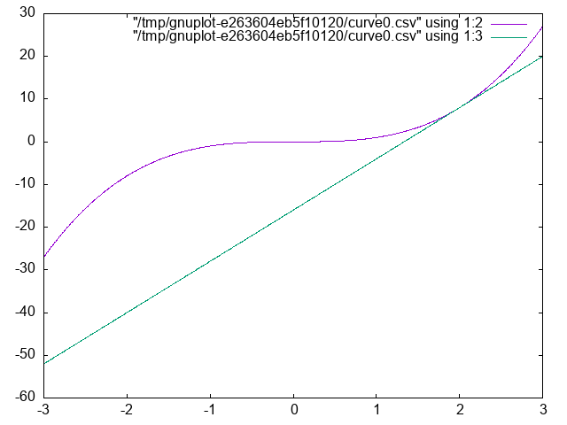
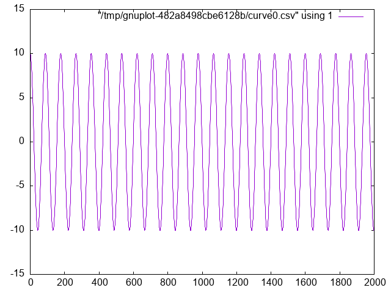
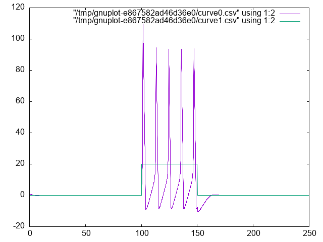
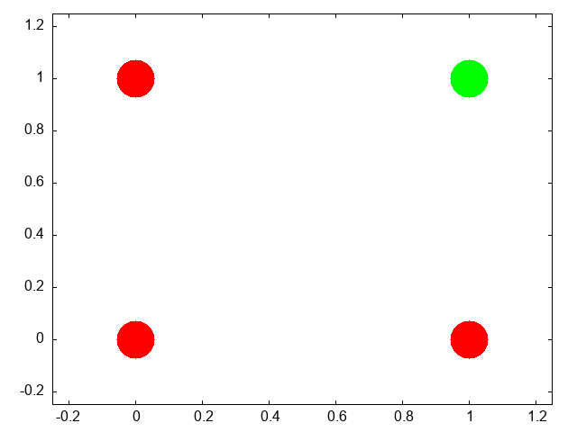

Computational Modeling for Psychology Students
Table of Contents
- 1. Welcome to Psych 420
- 1.1. Introductions assignment
- 1.2. What I am assuming you know or will learn on your own.
- 1.3. Some recommendations.
- 1.4. What is computational cognitive (neuro)science?
- 1.5. Syllabus Review
- 1.5.1. Course number and title
- 1.5.2. Term and year of offering
- 1.5.3. Class days, times, building, and room number
- 1.5.4. Class instructor’s name, office, contact information, office hours
- 1.5.5. Teaching assistant’s name, office, contact information, office hours (if applicable)
- 1.5.6. Course description
- 1.5.7. Course objectives
- 1.5.8. Required text and/or readings
- 1.5.9. A general overview of the topics to be covered
- 1.5.10. The evaluation structure for the course including course requirements, deadlines, weight of requirements toward the final course grade
- 1.5.11. Acceptable rules for group work (See Group Assignment Checklist)
- 1.5.12. Indication of how late submission of assignments and missed assignments will be treated
- 1.5.13. Indication of where students are to submit assignments and pick up marked assignments
- 1.5.14. Intellectual Property
- 1.5.15. Chosen/Preferred First Name
- 1.5.16. Mental Health Support
- 1.5.17. Territorial Acknowledgement
- 1.5.18. Policy 33, Ethical Behaviour
- 1.6. A look ahead – what we will code
- 1.7. A look ahead – what we talk about
- 1.8. What is Cognition?
- 1.9. Is a mathematical formula a model?
- 2. Neurally Inspired Models 1: The cellular level
- 3. What is computation and what is its role in cognitive science?
- 3.1. What do you think?
- 3.2. What do we need to know?
- 3.3. Computing in Minds and Computers
- 3.4. What is a Turing machine? Some Background and Details
- 3.5. Programming a Turing Machine: the Busy Beaver
- 3.6. The Lambda Calculus
- 3.7. The Church-Turing Thesis
- 3.8. Two Completely Different Models
- 3.9. Implications
- 4. Neurally Inspired Models 2: The network effect
- 4.1. Neural Networks
- 4.1.1. Cellular Automata
- 4.1.2. More Lessons from Cellular Automata
- 4.1.3. John Hopfield
- 4.1.4. Linear Algebra
- 4.1.5. Neural Networks Redux
- 4.1.6. What is a Neural Network?
- 4.1.7. Our First Neural Network: The Perceptron
- 4.1.8. The Delta Rule - Homework
- 4.1.9. Not all Networks are the Same: Hopfield
- 4.1.10. Hopfield Homework Description: Robustness to Noise (this might take awhile).
- 4.1. Neural Networks
- 5. Theory Creation in the Cognitive and Psychological Sciences
- 6. Some references
1. Welcome to Psych 420
1.1. Introductions assignment
- Who am I?
- Who are you?
Send me an email (britt@uwaterloo.ca) right now (from your uwaterloo address) with
- The subject line must be exactly P420Intro; nothing more; nothing less. Capitalization matters.
- Your name (and any pronounciation tips).
- Area of concentration,
- Year of study,
- Programming language you are most capable in (and your level of competency),
- Reason you took this course.
- What you will need: A functioning computer that you know how to use.
What to do now:
- Update your operating system.
- Verify you know how to find a file on your computer (e.g. do you know the name of your home directory)?
- Confirm you know how to install software on your computer.
- You know (or will know by next week) what
gitis and how to use it, and that you will have anIDEinstalled.
1.2. What I am assuming you know or will learn on your own.
- Your computer is up to date.
- You know what a directory is and how to find files on your computer.
- You know how to install software.
- You have at least beginner level programming experience in one course.
- You know what git/github are.
1.2.1. What if you don't?
You will have to learn on your own or with a small group. You can consult the course notes for Psych 390 which does cover some of this material. Here is a link to the wiki.
1.2.2. Git Clone and Github Acct assignment
An early home work will be a screen shot of your github homepage showing you forked or cloned the course repository. And the screen shot should be done using a program and not your phone. Course Webpage . That is the course content. If you want to view a web viewable form you can go to this link: course notes.
1.3. Some recommendations.
You will want an IDE. I personally use emacs. Experience has taught me that only about 3 in a 100 of you will share my opinion. Thus, I recommend VS Code if you have no other preference. It is becoming a sort of de facto standard.
1.3.1. IDE Installed assignment
Send me a screen shot of the IDE you intend to use installed on your laptop. No phone cameras. Use the screenshot functionality of your computer.
1.4. What is computational cognitive (neuro)science?
- Form groups of two (or three if odd number).
- Go to the following web site: 2025 Posters Cognitive Computational Neuroscience meeting.
- Pick a poster. Note it's label (letter-number; on the left)
- Be ready with a two sentence summary.
- Tell us why it is a good example of computational modelling of either mind or brain.
- Why you chose it.
1.5. Syllabus Review
1.5.1. Course number and title
PSYCH420 Introduction to Computational Neuroscience Methods
1.5.2. Term and year of offering
Winter 2026
1.5.3. Class days, times, building, and room number
Th 11:30 - 14:20 HH 2107
1.5.4. Class instructor’s name, office, contact information, office hours
Britt Anderson, PAS 4032, x 43056, Office hours by arrangement
1.5.5. Teaching assistant’s name, office, contact information, office hours (if applicable)
1.5.6. Course description
An introduction to the basic elements of computational modeling with an emphasis on psychology students.
1.5.7. Course objectives
- You will understand the scope of subjects and tools that comprise computational neuroscience and computational cognitive modeling.
- You will have a better understanding of theory development and how it relates to ideas about computation, programming, mind and brain.
- You will have a better understanding of how programming language choice influences model and theory development.
- You will learn some of the fundamental notation and concepts of the mathematical domains that form the basis of much computational modeling in neuroscience and psychology.
- You will gain experience in the practical aspects of programming simple models by doing.
1.5.8. Required text and/or readings
There is no required text book. Material that might be needed outside what I present in class will be made available on line, predominantly at the course repo on github. Make sure you are tracking the W2026 branch.
As all University students should have access to a computer, and a computer is required for this course, there is $0 CAD additional expense.
1.5.9. A general overview of the topics to be covered
See Course objectives.
1.5.10. The evaluation structure for the course including course requirements, deadlines, weight of requirements toward the final course grade
| Category | Contribution |
|---|---|
| Participation | 12%. |
| Final Project | 20%. |
| Homeworks | 68% |
It is easy to find high quality material to read or watch. What good then is the classroom? The classroom is for doing and clarifying. You have no way of knowing if your understanding developed from online material is complete or accurate unless you match it off against others. Your peers and your instructor. Thus, we shouldn't use class time for presenting material that can be read or watched anywhere anytime, but we should use it for testing whether your knowledge is sound, flexible, and deployable. We will therefore read, discuss, and collaborate.
Learning math and computing, and how to use them, is not something that can be learned through observation. Like playing piano, or improving your golf swing, improvement comes from practice, practice, practice. It is not enough to merely state the principles. You must demonstrate that they have been internalized. We will therefore do small exercises in class. And since one of the best ways to learn is to teach, we will frequently do these exercises in small groups. You might find your peers description of a problematic fact more useful than mine since they are at a more similar learning level. You may find your own understanding grows as you have to reframe my teachings in your own words to help a fellow student grasp a difficult concept.
For these reasons class participation is important. It is where we will test our comprehension of important points, I will learn if a concept is not well appreciated, and you will have the chance to practice the skills you later may wish to use in your own way on your own problems. Each week's attendance is worth 1% of the final grade.
I like to give lots of small homeworks. That takes the pressure of any one assignment, and means you get both frequent feedback on your performance, and you are coerced into not falling behind.
The final project is meant to give you an opportunity to showcase your learning and to use the general and specific skills that you will use in the future, whether in academics or industry, for sharing complex technical material with others.
1.5.11. Acceptable rules for group work (See Group Assignment Checklist)
Group work is the norm in post-graduate life (both academic and professional). Group work will be graded as a group. All group members will get the same grade for their group project. More details on the nature of the group project will be shared during the term.
1.5.12. Indication of how late submission of assignments and missed assignments will be treated
If I know that an assignment will be late in advance, and the reason for the tardiness is beyond your reasonable control, then I probably won't take off any points for late submission. Otherwise, I may reduce the possible maximal score by 10% per week.
1.5.13. Indication of where students are to submit assignments and pick up marked assignments
Assignments will be submitted in dropboxes on Learn. Submissions and Announcements are the main uses we will make of learn. All other material will be shared in class or via the github repository.
1.5.14. Intellectual Property
Intellectual property includes items such as:
- Lecture content, spoken and written (and any audio/video recording thereof);
- Lecture handouts, presentations, and other materials prepared for the course (e.g., PowerPoint slides);
- Questions or solution sets from various types of assessments (e.g., assignments, quizzes, tests, final exams); and
- Work protected by copyright (e.g., any work authored by the instructor or TA or used by the instructor or TA with permission of the copyright owner).
Course materials and the intellectual property contained therein, are used to enhance a student’s educational experience. However, sharing this intellectual property without the intellectual property owner’s permission is a violation of intellectual property rights. For this reason, it is necessary to ask the instructor, TA and/or the University of Waterloo for permission before uploading and sharing the intellectual property of others online (e.g., to an online repository).
Permission from an instructor, TA or the University is also necessary before sharing the intellectual property of others from completed courses with students taking the same/similar courses in subsequent terms/years. In many cases, instructors might be happy to allow distribution of certain materials. However, doing so without expressed permission is considered a violation of intellectual property rights.
Please alert the instructor if you become aware of intellectual property belonging to others (past or present) circulating, either through the student body or online. The intellectual property rights owner deserves to know (and may have already given their consent).
1.5.15. Chosen/Preferred First Name
Do you want professors and interviewers to call you by a different first name? Take a minute now to verify or tell us your chosen/preferred first name by logging into WatIAM.
Why? Starting in winter 2020, your chosen/preferred first name listed in WatIAM will be used broadly across campus (e.g., LEARN, Quest, WaterlooWorks, WatCard, etc). Note: Your legal first name will always be used on certain official documents. For more details, visit Updating Personal Information.
Important notes
If you included a preferred name on your OUAC application, it will be used as your chosen/preferred name unless you make a change now. If you don’t provide a chosen/preferred name, your legal first name will continue to be used.
1.5.16. Mental Health Support
All of us need a support system. The faculty and staff in Arts encourage students to seek out mental health support if they are needed.
- On Campus
Counselling Services: counselling.services@uwaterloo.ca / 519-888-4567 ext. 32655 MATES: one-to-one peer support program offered by the Waterloo Undergraduate Student Association (WUSA) and Counselling Services
- Off campus, 24/7
Good2Talk: Free confidential help line for post-secondary students. Phone: 1-866-925-5454 Grand River Hospital: Emergency care for mental health crisis. Phone: 519-749-4300 ext. 6880 Here 24/7: Mental Health and Crisis Service Team. Phone: 1-844-437-3247 OK2BME: set of support services for lesbian, gay, bisexual, transgender or questioning teens in Waterloo. Phone: 519-884-0000 extension 213
1.5.17. Territorial Acknowledgement
Academic freedom at the University of Waterloo We acknowledge that we are living and working on the traditional territory of the Attawandaron (also known as Neutral), Anishinaabe and Haudenosaunee peoples. The University of Waterloo is situated on the Haldimand Tract, the land promised to the Six Nations that includes ten kilometres on each side of the Grand River.
For more information about the purpose of territorial acknowledgements, please see the CAUT Guide to Acknowledging Traditional Territory. Academic freedom at the University of Waterloo
1.5.18. Policy 33, Ethical Behaviour
Policy 33, Ethical Behaviour states, as one of its general principles (Section 1), “The University supports academic freedom for all members of the University community. Academic freedom carries with it the duty to use that freedom in a manner consistent with the scholarly obligation to base teaching and research on an honest and ethical quest for knowledge. In the context of this policy, 'academic freedom' refers to academic activities, including teaching and scholarship, as is articulated in the principles set out in the Memorandum of Agreement between the FAUW and the University of Waterloo, 1998 (Article 6). The academic environment which fosters free debate may from time to time include the presentation or discussion of unpopular opinions or controversial material. Such material shall be dealt with as openly, respectfully and sensitively as possible.” This definition is repeated in Policies 70 and 71, and in the Memorandum of Agreement, Section 6
1.6. A look ahead – what we will code
- Turing Machine
- Integrate and Fire Neuron
- Hodgkin-Huxley Neuron
- Perceptron
- Hopfield Net
- Agent Based Model
- And possibly more
1.7. A look ahead – what we talk about
- What is cognition?
- What is a cognitive model?
- What is the relationship between cognition and neuroscience?
- All of which will benefit from better understanding what is a theory.
1.8. What is Cognition?
Groups of three. I prefer you not have the same people in your group as last time. We want to promote meeting people. It makes it easier for you to help each other, find people at your own learning level to study and work with, gauge your own skill level, develop informal networks that may be of use outside of this class. What is Cognition? Each group gets an opinion (want three of four groups) Brainard/Byrne/Heyes/Suddendorf 20 minutes to read and discuss to make sure they understand. Then rotate the groups so that each group has only one member/opinion. 15 minutes to explain the opinions to each other. General discussion.
1.9. Is a mathematical formula a model?
1.9.1. Forgetting Curve — Ebbinghaus

Figure 1: By The original uploader was Icez at English Wikipedia.
1.9.2. A Mathematical Function
import Graphics.Gnuplot.Simple plotFunc [PNG "./images/expdecay.png"] (linearScale 100 (1,6)) ((\x -> exp (1.0/x)) :: Double -> Double)

Figure 2: Plot of \( e^{\frac{1}{x}} \).
- A digression on code
The above example is coded in Haskell. If any of you feel like python or R are getting a bit stale and you would like to learn a new language I encourage you to consider Haskell. I picked it for use here because,
- I like it and want to get better at using it,
- I did not think many (or any) of you would know it,
- And therefore I could talk about coding a particular algorithm without ruining your opportunity to practice coding it yourself.
But what about Large Language Models (LLMs)? They are great, and you should definitely use them, but use them deliberately and after reflection.
- Do not use them to do an exercise for you. You may learn something about LLMs, but you will not learn how to code that algorithm and or very much about the programming language you want to master.
- Do use them to help your learning and understanding.
- You have written some code yourself and it is not working, and you can't figure out why. Ask your llm to find the bug and explain it.
- You want to know if your code is idiomatic. Ask your llm for a critique and comment on working code.
- If you have no idea how to get started do ask an LLM to architect without asking it to code.
- Do not live in the web/browser app. Get yourself an api key and access the llm from your chosen ide. Two tools that I use often are aider and openrouter. The latter will give you access to free models. Aider will allow you to call the llm from the terminal.
This course is not to teach you how to use LLMs or set them up, but since many of us will be making use of them we should talk about the pros and cons of particular use cases and outputs. Treat your LLM usage like a citation. Say when and where you used it.
1.9.4. Generate your own plot of the exponential function.
2. Neurally Inspired Models 1: The cellular level
2.1. Action Potentials
Our goals:
- Understand what we are trying to model: the action potential.
- Learn some of the prior work.
- Understand the mathematical background for an action potential.
- Simple electronics.
- Simple differential equations.
- Make ourselves familiar with the basic notation of these two background areas.
- Implement simple computational versions of spiking neurons. If you cannot code it, you do not understand it.
2.2. What is an action potential?
- Draw one.
- Explain what ions account for the different parts of the curve.
- Why is an action potential like a flush toilet?
- Why did/do people use the action potential to argue that brains are like digital computers?
- Who were McCulloch and Pitts and why are they relevant?
- Who developed the first detailed biophysical model of the action potential and what became of them?
- Why would we want to write a program to simulation a spiking neuron?
- Why might we want a simpler version?
- What maths are important for modeling spiking neurons?
2.3. Notation
The mathematician's interest in being concise often means that simple ideas get translated to unfamiliar symbols. \ Just because the notation is unfamiliar does not mean the idea is complicated. What does \( \sum_{\forall x \in \left\{ 1 , 2 , 3 \right \}} x = 6 \) mean?
Different mathematical and computational traditions have their own preferences, thus the same idea can have different notations. To a mathematician the \(\sqrt{-1} = \) i. To the engineer it is j.
\(\frac{dx}{dt}\) \(\dot{x}\) \(x{'}\) \(f{'}(x)\) are all different ways of talking about derivatives.
2.4. Differential Equations
- What is a differential equation (aka de)?
- What is a derivative?
- What is the definition of a derivative? \( \frac{dx}{dy} = \frac{f(x + \Delta x) - f(x)}{x+\Delta x - x} \)
- What is a slope of a line?
- Of a curve?
- Provide examples of phenomena in psychology or neuroscience (other than the action potential) that might be good candidates for this mathematical technique.
plotFuncs [PNG "./images/derivExample.png"] (linearScale 1000 (-3 , 3 ) ) [(\x -> x ** 3) :: Double -> Double , (\x -> 12 * x - 16) :: Double -> Double ]

2.5. Using a DE
In computational neuroscience (or psychology) we don't typically " solve DEs. We use them. We use them to help us move forward in time to understand a process by virtue of what we know about its rate of change. We will see that in a couple of short examples, and then some simple scenarios for you to play with.
2.6. Using DEs to compute a square root
1: xcubed :: Double -> Double 2: xcubed = (** 3) 3: 4: diffXCubed :: Double -> Double 5: diffXCubed = ( 3 *) . ( ** 2) 6: 7: getStep :: Double -> Double -> Double 8: getStep guess goal = ( goal - xcubed guess) / diffXCubed guess 9: 10: getCubeRoot :: Double -> Double -> Double -> Double 11: getCubeRoot g i t = 12: let cg = i + getStep i g 13: myerr = abs (xcubed cg - g) in 14: if myerr > t then getCubeRoot g cg t else cg
Now let's test it:
import Sqrt --:load "./code/sqrt.hs" getCubeRoot 27 1 0.001 getCubeRoot 8 1 0.001 getCubeRoot 141 1 0.001
<interactive>:4:1: error: [GHC-58481] parse error on input ‘--:’ 3.0000005410641766 2.000004911675504 5.204827869200383
2.7. Using DEs - Practicing with Springs
Our Hodgkin-Huxley model will be will require us to use several different equations. And though the intergrate and fire neuron only requires one, a neuron is still rather abstract as a computational entity. Therefore, we will begin our DE coding practice with a simple, idealized spring.
Our differential equation is \( \frac{d^2 position}{dt^2} = -P~position \).
where 'position' refers to the location in space of the unattached end of our spring (we assume one end is anchored to a wall or something), 't' refers to time, and 'P' is a constant, often called the spring constant, that indicates how springy the spring is.
If we knew where the spring was now, we could use this equation to tell us where it would be a little bit into the future; just as you can use your velocity on the highway to estimate your location in the future. The smaller the time step the more accurate will be our estimate. This simple Euler method often works quite well for smooth functions that don't change very much.
Unfortunately the spring equation is for the second derivative of location relative to time. This is called acceleration. Thus we need a two step process. From our current location and this equation estimate our velocity. From our present location and our velocity estimate our location. And repeat.
1: {-# LANGUAGE GADTs #-} 2: module Spring where 3: 4: data SpringState where 5: SpringState :: { 6: sDt :: Double, 7: sAccFxn :: Double -> Double, 8: sVel :: Double, 9: sLoc :: Double } -> SpringState 10: 11: instance Show SpringState where 12: show :: SpringState -> String 13: show s = "SpringState { t: " ++ show (sDt s) ++ "\ 14: \, v: " ++ show (sVel s) ++ "\ 15: \, loc: " ++ show (sLoc s) ++ " }" 16: 17: 18: {- Initial Values -} 19: 20: initV :: Double 21: initV = 0 22: initLoc :: Double 23: initLoc = 10 24: sprConst :: Double 25: sprConst = 2.0 26: timeStep :: Double 27: timeStep = 0.05 28: dt :: Double 29: dt = timeStep 30: 31: 32: {- Helper Functions -} 33: 34: accel :: Double -> Double -> Double 35: accel sc loc = (-sc) * loc 36: 37: accWithSC :: Double -> Double 38: accWithSC = accel sprConst -- called currying 39: 40: eulerUD :: Double -> Double -> Double -> Double 41: eulerUD ts roc oldval = oldval + roc * ts 42: 43: springLoop :: SpringState -> SpringState 44: springLoop ss = 45: let cA = sAccFxn ss (sLoc ss) 46: cV = eulerUD (sDt ss) cA (sVel ss) 47: cL = eulerUD (sDt ss) cV (sLoc ss) 48: in ss {sVel = cV, sLoc = cL} 49: 50: 51: releaseSpring :: Int -> [SpringState] 52: releaseSpring maxIter = 53: take maxIter (iterate springLoop 54: (SpringState timeStep 55: accWithSC initV 56: initLoc)) -- makes use of lazy evaluation
import Spring -- :load "./code/Spring.hs" plotList [PNG "./images/spring.png"] $ map (\s -> sLoc s) $ releaseSpring 2000

Figure 3: Frictionless Springs Oscillate
2.7.1. Now You Try with a Damped Oscillator
The changes to whatever code you have for the frictionless spring should require very little alteration to work with the following DE:
\[ \frac{d^2 s}{dt^2} = -P~s(t) - k~v(t) \]
2.8. Integrate and Fire Neuron
Is the integrate and fire model used much in modeling in the present time? answer
2.8.1. Historical Notes
- Louie La Pique
Modern Commentary on Lapique's Neuron Model
Figure 4: La Pique Laboratory at the Sorbonne Paris
Original Lapique Paper (translated) Brief Biographical Details of Lapicque
- Lord Adrian
- When was the action potential demonstrated?
- What was the experimental animal used by Adrian?
https://www.ncbi.nlm.nih.gov/pmc/articles/PMC1420429/pdf/jphysiol01990-0084.pdf
2.8.2. Formula I and F
\(\tau \frac{dV(t)}{dt} = -V(t) + R~I(t) \)
Why is this the formula?
- Simple Electronics
The following questions are the ones we need to answer to derive our integrate and fire model.
- What is Ohm's Law?
- What is Kirchoff's Point Rule?
- What is Capacitance?
- What is the relation between current and charge?
- Deriving the IandF Equation
\begin{align*} I &= I_R + I_C & (a) \\ &= I_R + C\frac{dV}{dt} & (b)\\ &= \frac{V}{R} + C\frac{dV}{dt} & (c)\\ RI &= V + RC\frac{dV}{dt} & (d) \\ \frac{1}{\tau} (RI-V) &= \frac{dV}{dt} & (e)\\ \end{align*}Can you tell why, looking at the integrate and fire equation, if we don't reach the firing threshold, we see an exponential decay?
a: Kirchoff's point rule,
b: the relationship between current, charge, and their derivatives
c: Ohm's law
d: multiply through by R
e: rearrange and define \(\tau\)
2.8.3. Coding up the Integrate and Fire Neuron
Approach this with the same ideas as the spring example. You have a certain initial value, and you update that using your differential equation that relates how much voltage changes as a function of time and current voltage.
Unlike real neurons the Integrate and Fire neuron model does not have a natural threshold and spiking behavior. You pick a threshold and everyone time your voltage reaches that threshold you designate a spike and reset the voltage.
Additional Activities (if that goes too quickly):
- Add a refractory period to the Integrate and Fire model.
- Alter the input current
- Change the form of the input current
1: {-# LANGUAGE GADTs #-} 2: 3: module IandF where 4: 5: dt,maxt,initt,starttime,stoptime,cap 6: ,res,threshold,spikedisplay,initv 7: ,voltage,injectioncurrent 8: ,tau :: Double 9: injectiontime,runningTime :: [Double] 10: dt = 0.05 11: maxt = 10.0 12: initt = 0.0 13: starttime = 1.0 14: stoptime = 6.0 15: cap = 1.0 16: res = 2.0 17: threshold = 3.0 18: spikedisplay = 8.0 19: initv = 0.0 20: voltage = initv 21: injectioncurrent = 4.3 22: injectiontime = [starttime, stoptime] 23: tau = res * cap 24: runningTime = [0.0] 25: 26: data IandFStrut where 27: IandFStrut :: { 28: time :: [Double], 29: spikestatus :: Bool, 30: currents :: [Double], 31: voltages :: [Double] 32: } -> IandFStrut 33: deriving Show 34: 35: instance Semigroup IandFStrut where 36: (IandFStrut t1 _ c1 v1) <> (IandFStrut t2 s2 c2 v2) = 37: IandFStrut (t1 ++ t2) s2 (c1 ++ c2) (v1 ++ v2) 38: 39: initialStrut :: IandFStrut 40: initialStrut = makeStep 0 False 0.0 initv 41: 42: update :: Double -> Double -> Double -> Double 43: update ov roc ts = roc * ts + ov 44: 45: dvdt :: Double -> Double -> Double -> Double 46: dvdt lres li lv = 47: (1 / tau) * ( lres * li - lv ) 48: 49: between :: Double -> Double 50: between ct = case injectiontime of 51: [first,last] -> 52: if ct >= first && ct <= last 53: then injectioncurrent 54: else 0.0 55: badList -> error "Error: Expected list of two doubles" 56: 57: vchoice :: (Double, Bool, Double, Double) -> Double 58: vchoice (cv,ss,thr,sd) 59: | ss = 0.0 60: | cv > thr && not ss = sd 61: | otherwise = cv 62: 63: makeStep :: Double -> Bool -> Double -> Double -> IandFStrut 64: makeStep t s c v = IandFStrut [t] s [c] [v] 65: 66: oneRunIandF :: IandFStrut -> IandFStrut 67: oneRunIandF inStrut = 68: let ct = last (time inStrut) 69: cv = last (voltages inStrut) 70: ci = between ct 71: nv = vchoice (update cv (dvdt res ci cv) dt 72: , spikestatus inStrut 73: , threshold, spikedisplay) 74: nextstep = makeStep (ct + dt) 75: (abs (nv - spikedisplay) < threshold) 76: ci 77: nv 78: in (inStrut <> nextstep)
import IandF -- :load ./code/IandF.hs let run200 = iterate oneRunIandF initialStrut !! 200 vs = voltages run200 cs = currents run200 ts = time run200 tv = zip ts vs tc = zip ts cs plotPaths [PNG "./images/iandf.png"] [tv,tc]
2.9. Integrate and Fire Homework
The Integrate and Fire homework has two components. One practical and one theoretical.
Practically, submit an integrate and fire program. Do something to show that you had something to do with the coding and you understand what is happening.
Theoretically, look at this article (pdf) and tell me how you feel our integrate and fire model compares to these actual real world spiking data when both are give constant input. What are the implications for using the integrate and fire model as a model of neuronal function?
2.10. Hodgkin and Huxley Model
2.10.1. Who were Hodgkin and Huxley
The goal in this biological scavenger hunt is to try and develop some ideas about what makes one able to effectively contribute to computational neuroscience. As they undoubtedly did. I will divide you into small groups each targeting either Hodgkin or Huxley. Then we will mix up the groups for sharing. Then we will come back together to talk very briefly about who they were, but at somewhat greater length about what we learned about what sort of education or other experiences we should seek out if we want to contribute to this field.
2.10.2. Model Description
Gerstner's (free) book's chapter on the HandH model.
- Comments and Steps in Coding the Hodgkin Huxley Model
Some introductory reminders and admonitions:
The current going in to the cell is intended to represent what an electrophysiologist would inject in their laboratory setting, or what might be changed by the input from other neurons. The total current coming out of the neuron is the sum of the capacitance (due to the lipid bilayer), and the resistance (due to the ion channels). This is Kirchoff's rule implemented in the Hodgkin and Huxley model.
Unlike the Integrate and Fire model, which lumps all the ionic currents together, the HandH model decomposes the conductance into three parts. You have a resistance for each ion channel. The rule for currents in parallel is to apply Kirchoff's and Ohm's laws realizing that they all experience the same voltage, thus the currents sum. The Hodgkin and Huxley model has components for Sodium (Na), Potassium (K), and negative anions (still lumped as "leak" l).
\( \sum_i I_R(t) = \bar{g}_{Na} m^3 h l(V(t) - E_{Na}) + \bar{g}_{K} n^4 (V(t) - E_{K}) + \bar{g}_{L} (V(t) - E_{L})\)
\( I_{tot} = I_r + I_C \)
\( I_{tot} = \bar{g}_{Na} m^3 h (V(t) l- E_{Na}) + \bar{g}_{K} n^4 (V(t) - E_{K}) + \bar{g}_{L} (V(t) - E_{L}) + c~\frac{dV}{dt} \)
If you rearrange terms you can get the \(\frac{dV}{dt}\) on one side of the equation by itself.
\(c~\frac{dV}{dt} = I_{tot} - (\bar{g}_{Na} m^3 h (V(t) - E_{Na}) + \bar{g}_{K} n^4 (V(t) - E_{K}) + \bar{g}_{L} (V(t) - E_{L})) \)
You cannot program what you don't understand. Don't start writing code too soon. Writing code won't make a poorly understood idea clearer. Though it can reveal that you don't understand what you thought you understood. It is often best to start sketching ideas on paper or a blackboard before you open up your IDE.
For instance,
- What are the \( \bar{g}_*\) terms?
- What are the \( E_{*} \) terms?
- What do m, n, and h represent?
- Where did these equations come from?
Remember, it is differential equations all the way down. You can use the same Euler method to patiently update each of your terms and then repeatedly loop between them. But recognize there are DEs at multiple levels. Each of the m, n, and h terms are also changing and regulated by a differential equation. They are dependent on voltage, too. For example, \( \dot{m} = \alpha_m (V)(1 - m) - \beta_m (V) m \).
Recognize that
- Each of the m, n, and h terms have their own equation of exactly the same form, but with their unique alphas and betas (that is what the subscript means).
- What does the V in parentheses mean?
- When the proteins of the ion channels were finally sequenced (decades later), what do you think was the number of sub-units that the sodium and potassium channels were found to have?
Initial Assumptions
If you allow \( t \rightarrow \infty \mbox{, then } \frac{dV}{dt}=? \)
- You assume that it goes to zero; that is, you reach steady state. Then you can solve for some of the constants.
- Where do the constants come from?
- They come from experiments, and you use what you are given.
- Assume the following constants - they are set to assume a resting potential of zero (instead of what and why doesn't this matter)?
- These constants also work out to enforce a capacitance of 1.
- Constants
Several different sets of constants are used for this model in published versions. They are all, in one sense the same, but this set amke the programming easier. For the moment, ignore the units and use these numbers.
Table 1: Constant Values to Use for our Hodgkin-Huxley Model Constant Value ena 115 gna 120 ek -12 gk 36 el 10.6 gl 0.3 Warning These constants are adjusted to make the resting potential 0 and the capacitance 1.0.
- Alpha and Beta Formulas
\[ \alpha_n(V_m) = \frac{0.01 (10 - V_m)}{\exp\left( \frac{10 - V_m}{10} \right) - 1} \]
\[ \alpha_m(V_m) = \frac{0.1(25 - V_m)}{\exp\left( \frac{25 - V_m}{10} \right) - 1} \]
\[ \alpha_h(V_m) = 0.07 \exp\left( \frac{-V_m}{20} \right) \]
\[ \beta_n(V_m) = 0.125 \exp\left( \frac{-V_m}{80} \right) \]
\[ \beta_m(V_m) = 4 \exp\left( \frac{-V_m}{18} \right) \]
\[ \beta_h(V_m) = \frac{1}{\exp\left( \frac{30 - V_m}{10} \right) + 1} \]
- Demonstrating the Hodgkin-Huxley Model
TODO: reformat code to fit on page
1: {-# LANGUAGE GADTs #-} 2: 3: module HandH where 4: import Data.Maybe (fromMaybe) 5: 6: data SimParameters where 7: SimParameters :: { 8: dt :: Float, 9: maxT :: Float, 10: initT :: Float, 11: startTime :: Float, 12: stopTime :: Float, 13: capacitance :: Float, 14: resistance :: Float, 15: initialVoltage :: Float, 16: injectionCurrent :: Float, 17: tau :: Float 18: } -> SimParameters 19: deriving Show 20: 21: data NeuronState where 22: NeuronState :: { 23: vns :: Float 24: , ic :: Float 25: , neuTime :: Float 26: , mns :: Maybe Float 27: , nns :: Maybe Float 28: , hns :: Maybe Float 29: } -> NeuronState 30: deriving Show 31: 32: data NeuronParams where 33: NeuronParams :: { 34: ena :: Float, 35: gna :: Float, 36: ek :: Float, 37: gk :: Float, 38: el :: Float, 39: gl :: Float 40: } -> NeuronParams 41: deriving Show 42: 43: data NeuronDynamics where 44: NeuronDynamics :: { 45: alphaN :: Float -> Float, 46: alphaM :: Float -> Float, 47: alphaH :: Float -> Float, 48: betaN :: Float -> Float, 49: betaM :: Float -> Float, 50: betaH :: Float -> Float, 51: mdot :: Float -> Float -> Float, 52: ndot :: Float -> Float -> Float, 53: hdot :: Float -> Float -> Float, 54: minf :: Float -> Float, 55: ninf :: Float -> Float, 56: hinf :: Float -> Float 57: } -> NeuronDynamics 58: 59: data Neuron where 60: Neuron :: {parameters :: NeuronParams, 61: equations :: NeuronDynamics 62: } -> Neuron 63: 64: dotDynamics :: Float -> Float -> 65: (Float -> Float) -> 66: (Float -> Float) -> 67: Float 68: dotDynamics volt chan alphaf betaf = 69: alphaf volt * (1 - chan) - betaf volt * chan 70: 71: dotInfinity :: Float -> 72: (Float -> Float) -> 73: (Float -> Float) -> 74: Float 75: dotInfinity v alphaf betaf = alphaf v / (alphaf v + betaf v) 76: 77: pSet1 :: SimParameters 78: pSet1 = SimParameters 0.05 300.0 0.0 100.0 150.0 1.0 2.0 0.0 20.0 (resistance pSet1 * capacitance pSet1) 79: 80: pSet2 :: SimParameters 81: pSet2 = SimParameters 0.05 300.0 0.0 10.0 50.0 1.0 2.0 0.0 0.0 (resistance pSet2 * capacitance pSet2) 82: 83: healthyParams :: NeuronParams 84: healthyParams = NeuronParams 115 120 (-12) 36 10.6 0.3 85: 86: healthyDynamics :: NeuronDynamics 87: healthyDynamics = NeuronDynamics { 88: alphaN = \v -> (0.1-0.01*v)/(exp(1-0.1*v) - 1), 89: alphaM = \v -> (2.5-0.1*v)/(exp(2.5-0.1*v) - 1), 90: alphaH = \v -> 0.07*exp((-v)/20), 91: betaN = \v -> 0.125 * exp((-v)/80), 92: betaM = \v -> 4*exp((-v)/18), 93: betaH = \v -> 1/(exp(3-0.1*v)+1), 94: mdot = \v c -> dotDynamics v c (alphaM healthyDynamics) 95: (betaM healthyDynamics), 96: ndot = \v c -> dotDynamics v c (alphaN healthyDynamics) 97: (betaN healthyDynamics), 98: hdot = \v c -> dotDynamics v c (alphaH healthyDynamics) 99: (betaH healthyDynamics), 100: minf = \v -> dotInfinity v (alphaM healthyDynamics) 101: (betaM healthyDynamics), 102: ninf = \v -> dotInfinity v (alphaN healthyDynamics) 103: (betaN healthyDynamics), 104: hinf = \v -> dotInfinity v (alphaH healthyDynamics) 105: (betaH healthyDynamics) 106: } 107: 108: healthyNeuron :: Neuron 109: healthyNeuron = Neuron healthyParams healthyDynamics 110: 111: initialState :: NeuronState 112: initialState = NeuronState (initialVoltage pSet1) (injectionCurrent pSet1) (initT pSet1) Nothing Nothing Nothing 113: 114: updNeuron :: Neuron -> SimParameters -> NeuronState -> NeuronState 115: updNeuron neuin spin nsin = 116: let eqneuin = equations neuin 117: voltagein = vns nsin 118: nparamsin = parameters neuin 119: outi = ic nsin 120: mnew = fromMaybe 0.0 (case mns nsin of 121: Nothing -> Just $ minf eqneuin voltagein 122: Just x -> Just $ x + mdot eqneuin voltagein x * dt spin) 123: nnew = fromMaybe 0.0 (case nns nsin of 124: Nothing -> Just $ ninf eqneuin voltagein 125: Just x -> Just $ x + ndot eqneuin voltagein x * dt spin ) 126: hnew = fromMaybe 0.0 (case hns nsin of 127: Nothing -> Just $ hinf eqneuin voltagein 128: Just x -> Just $ x + hdot eqneuin voltagein x * dt spin) 129: dvdt = outi - 130: (gna nparamsin * mnew ^ 3 * hnew * 131: (voltagein - ena nparamsin) + 132: gk nparamsin * nnew ^ 4 * 133: (voltagein - ek nparamsin) + 134: gl nparamsin * 135: (voltagein - el nparamsin)) 136: in 137: nsin {vns = voltagein + dvdt * dt spin 138: , ic = if (neuTime nsin < stopTime spin) && 139: (neuTime nsin > startTime spin) 140: then injectionCurrent spin 141: else 0.0 142: , neuTime = neuTime nsin + dt spin 143: , mns = Just mnew 144: , nns = Just nnew 145: , hns = Just hnew 146: }
import HandH -- :load ./code/HandH.hs let myData = take 5000 $ iterate (updNeuron healthyNeuron pSet1 ) initialState vs = map vns myData cs = map ic myData ts = map neuTime myData tv = zip ts vs tc = zip ts cs plotPaths [PNG "./images/handh.png"] [tv,tc]

- Hodgkin and Huxley Homework
Your homework will require you to write the code for a Hodgkin-Huxley Neuron and then modify it. You will provide at least two plots in addition to your code. You will need to adapt the model to fit this paper.1 These authors analyzed a series of inherited channelopathies (where ion channels are altered due to mutation) via simulation. In these conditions empirical measurements had been made on actual patients. The authors adapted the Hodgkin and Huxley model to permit them to explore the effects of such altered conductance on neuronal excitability. For this home work you will need to adapt the n equation to be as follows:
\( \frac{dn}{dt} = \gamma_\tau (\gamma_\alpha \alpha_n (v - \Delta V)(1 - n) - \gamma_\beta \beta_n (v- \Delta V)n) \)
Then you must select one of the sets of γ from their Table 1 and plot the neuronal activity.
To start implement the new n channel and set all the γ s to 1. This should work exactly like the old model. Generate a plot showing that it does. For the second plot generate the same plot with your altered \(\gamma\) values.
3. What is computation and what is its role in cognitive science?
Chapter 1 of Physical Computation in Cognitive Science by Nir Fresco
3.1. What do you think?
- Computational modeling of cognition and neural systems is/is-not the same as programming.
- What else could computational modeling be?
- What are we losing when we treat our computational model as a programmatic black box?
- Is the computation that is cognitive the same as the computation that takes place in digital computers?
- If so, why is there more than one programming language?
- Might our choice of programming language based on features actually influence what we can conceive for a computational model?
- What does it mean for something to be a model?
- Is simulation good enough?
- Is prediction good enough?
- Do we want a model to explain something? And then of course what constitutes explanation?
3.2. What do we need to know?
- We need to know the facts of the matter, neurally and cognitively.
- We need to have a clear question.
- We need to have a theoretical committment that leads to clear predictions, and guides our evaluation of what to do.
- Which of course means we need to know what a theory is and how to build one.
- We need to know the facts of the matter mathematically and programmatically
- We need to be able to read the maths.
- We need to be conversant in symbols and notations.
- We need to know how to express in symbols what we can say in words.
- We need to know how to express in code what we can write in symbols.
We need to be concerned with all the levels: mind and brain, theory, math, and code. We can abbreviate these as MTMC: mind → theory → math → code; the arrows indicating an ordering on our development.
3.3. Computing in Minds and Computers
One definition of whether something is computable is whether there exists a Turing Machine that can compute it. Although most of us learned the name "Turing" in the context of whether a computer has human intelligence, the so-called Turing test, the model of Turing computability emerged from thinking about humans computing2
3.4. What is a Turing machine? Some Background and Details
Turing machines are quite simple implements. While one can build a physical Turing machine, the more usual sense of the term is for a hypothetical computer that is comprised of:
- a finite alphabet,
- a finite set of states,
- the capacity to read and write to a single location in memory, and the ability to adjust the memory location immediately left or right or to make no move at all, and
- a set of instructions (or "machine table") that translates the combination of the current state and the current symbol to a new state and one of the acceptable actions.
3.4.1. Classroom Activity
Let's develop pseudo-code for the implementing a Turing Machine
3.5. Programming a Turing Machine: the Busy Beaver
In my experience the only way to really come to grips with what a Turing machine is is to program one yourself. For this exercise we will program a Turing machine to solve an elementary version of the Busy Beaver problem. This is a famous problem, because it is easy to state and woefully difficulty to answer. In fact it is incomputable.
The following is a slightly formatted version of the Wikipedia description of a Turing machine.
- A Turing machine has n "operational" states plus a Halt state, where n is a positive integer, and one of the n states is distinguished as the starting state.
- The machine uses a single two-way infinite (or unbounded) tape.
- The tape alphabet is {0, 1}, with 0 serving as the blank symbol.
- The machine's transition function takes two inputs:
- the current non-Halt state,
- the symbol in the current tape cell,
- and produces three outputs:
- a symbol to write over the symbol in the current tape cell (it may be the same symbol as the symbol overwritten),
- a direction to move (left or right@";" that is, shift to the tape cell one place to the left or right of the current cell), and
- a state to transition into (which may be the Halt state).
We will use it to guide us to write a simple instance that computes a solution to the Busy Beaver problem. A n-state Turing machine has \( (4n + 4)2n \)states. The formula is (symbols × directions × (states + 1))(symbols × states). The transition function (how to figure out where to go next may be seen as a finite look-up table. Each row of the table is a 5-tuple: (current state, current symbol, symbol to write, direction of shift, next state). Our goal with the Busy Beaver problem is to run our machine to produce as long a series of uninterrupted ones as we can and then halt.
What it means to "run" a Turing machine is to start in the starting state with the current tape cell being any cell of a blank (all-0) "tape", and then iterate the transition function. If the Halt state is entered then the number of 1s remaining on the tape is called the machine's score. Different transition rules will give us different outputs, so we can score our machine based on its performance.
To restate in a more general way, the n-state busy beaver (BB-n) game is a contest to find an n-state Turing machine having the largest possible score — the largest number of 1s on its tape after halting. A machine that attains the largest possible score among all n-state Turing machines is called an n-state busy beaver, and a machine whose score is merely the highest so far attained (perhaps not the largest possible) is called a champion n-state machine.
3.5.1. A Busy Beaver Warm-Up
A simple version of the Busy Beaver problem, and one you can do by hand with pencil and paper, is the n=2 version. Create a Turing Machine with the following transition rules:
Here is the transition table for our machine:
| Machine Tuple In | Machine Tuple Out |
|---|---|
| a0 | b1r |
| a1 | b1l |
| b0 | a1l |
| b1 | h1r |
3.5.2. Busy Beaver Problem Demo Code
1: module BusyBeaver where 2: 3: import Data.Set (Set,fromList) 4: import qualified Data.Map.Lazy as Map 5: import Data.Map.Lazy (Map) 6: 7: type TMState = Char 8: type Position = Int 9: data BinNum = Zero | One deriving (Show, Eq, Ord, Enum) 10: type TMTape = Map Int BinNum 11: 12: data TuringMachine = TM 13: { state :: TMState 14: , tape :: TMTape 15: , headLoc :: Int} deriving Show 16: 17: testStates :: Set TMState 18: testStates = fromList ['a','b','h'] 19: 20: initialTape :: Map Int BinNum 21: initialTape = Map.empty 22: 23: defaultTapeCell :: BinNum 24: defaultTapeCell = Zero 25: 26: initialState :: TMState 27: initialState = 'a' 28: 29: initialTM :: TuringMachine 30: initialTM = TM initialState initialTape 0 31: 32: readFromTape :: TMTape -> Int -> BinNum 33: readFromTape t i = 34: Map.findWithDefault Zero i t 35: 36: writeToTape :: BinNum -> Int -> TMTape -> TMTape 37: writeToTape bn hl = Map.insert hl bn 38: 39: 40: updTM :: TuringMachine -> TuringMachine 41: updTM tm@(TM st t hl) = 42: let bn = readFromTape t hl in 43: case st of 44: 'a' -> case bn of 45: Zero -> tm {state = 'b' 46: , tape = writeToTape One hl t 47: , headLoc = hl + 1} 48: One -> tm {state = 'b' 49: , tape = writeToTape One hl t 50: , headLoc = hl - 1} 51: 'b' -> case bn of 52: Zero -> tm {state = 'a' 53: , tape = writeToTape One hl t 54: , headLoc = hl - 1} 55: One -> tm {state = 'h' 56: , tape = writeToTape One hl t 57: , headLoc = hl } 58: 'h' -> tm 59: _ -> error "Entered incorrect state variable"
import BusyBeaver --:load ./code/BusyBeaver.hs let d = iterate updTM initialTM tape $ d !! 7
fromList [(-2,One),(-1,One),(0,One),(1,One)]
3.6. The Lambda Calculus
Turing machines are probably the most common framework used for asserting that cognition is computation, but there are others. Another widely used construction, especially in theoretical computer science, is the lambda calculus. Although these two constructions appear quite different on the surface, it has been shown that any thing that can be computed in one can be computed by the other. They are equivalent. This has led to a conjecture that anything computable can be computed by a Turing Machine or the Lambda Calculus (and some other additional, equivalent constructions).
3.6.1. Lambda Notation Basics
The lambda calculus is built entirely from functions.
Syntax
\x.xmeans "a function that takes input x and returns x" (the identity function)\x.ymeans "a function that takes input x and returns y" (a constant function)- Application:
(\x.x) 5means "apply the identity function to 5", which gives us5
Try evaluating these by hand:
(\x.x) 7evaluates to7(\x.5) 9evaluates to5(the input 9 is ignored).(\x.x x) 3evaluates to3 3(we apply 3 to itself… which doesn't make sense, but syntactically this is what happens)
- The Basic Combinators
- I - Identity
I = \x.xTakes its input and returns it unchanged. Example:I 5 → 5- K - Constant (Kestrel)
K = \x.\y.xTakes two inputs and returns the first, ignoring the second. Example:K a b → aThink of this as "pick the first argument."- S - Substitution (Starling)
S = \x.\y.\z.(x z)(y z)This one is trickier. It takes three inputs and applies the first to the third, then applies the second to the third, then applies those results to each other. Example trace forS K K x:S K K x(K x)(K x)(by definition of S)x(because K x returns a function that ignores its input and returns x, so (K x)(anything) = x)
Notice: we just built the identity function I from K and S!
A Non-Terminating Example Here's something interesting:
(\x.x x)(\x.x x)Try to evaluate it:
(\x.x x)(\x.x x)- Applying the left function to the right:
(\x.x x)(\x.x x) - We're back where we started!
This is an infinite loop, but we got it using only function application. No
whileloops, no recursion keyword - just functions.- Write a python or R implementation of each of I, K, and S. Try running this code. Verify that:
I(5)returns5K(3)(7)returns3S(K)(K)(5)returns5(it acts like the identity function)
3.7. The Church-Turing Thesis
The three combinators (I, K, S) are sufficient to compute anything that your Turing machine can compute.
You can build:
- Numbers
- Arithmetic operations
- Conditional logic
- Recursion
- All computable functions
3.8. Two Completely Different Models
| Turing Machine | Lambda Calculus |
|---|---|
| Tape, head, states | Functions only |
| Symbols and movement | Application and substitution |
| Physical/mechanical intuition | Abstract/mathematical |
| Same computational power | Same computational power |
This equivalence is one of the deepest results in computer science. It suggests that "computation" is a fundamental concept that transcends any particular implementation.
3.9. Implications
If anything that is computable can be computed by one of these systems,
and if thinking is computation,
then does that mean that all thinking could be realized by a Turing machine,
and since Turing Machines can be built from non-biological parts that any Universal Turing Machine would have all the objective and subjective capabilities of a human thinker?
4. Neurally Inspired Models 2: The network effect
4.1. Neural Networks
- What is a neural network?
- What mathematics are needed to build a neural network?
- How can neural networks help us understand cognition?
4.1.1. Cellular Automata
- Drawing Exercise
- Pick a number between 0 and 255 inclusive. Tell it to me when I ask.
Compute your rule. You write the configurations on top, and you write the base two representation of your number below. Like this for rule number 110.
111 110 101 100 011 010 001 000 0 1 1 0 1 1 1 0 - Using your rule and your piece of graph paper start implementing your rule after coloring a single square in the middle of the top row "black" (equals 1).
- Drop down one row and working from left to right color in the squares based on the three squares in the row above them.
The idea is something like this:

Figure 5: An illustration of which three squares in the row above influence the coloring of your grid.
- Do this for several rows.
What you probably noticed
This process is tedious and mistake prone. One good reason for translating your theoretical ideas into code is so that you are not tripped up by such rote errors. Another thing to notice is that your "rule" is like a computer function. There is an input (the colors of the three squares above), processing, and an output of what color. In addition to this mechanical intuition a function can also be conceived as a set of pairs. The first element of the pair is the input, and the second element of the pair is the output.
IAMHERE. Need to rewrite this in haskell.
import Automata drawAutomata 30 128 5 "./images/rule30.png"

Figure 6: Rule 30
Lessons Learned
- Repetitive actions are hard. We (humans) make mistakes following even simple rules for a large number of repeated steps. Better to let the computer do it since that is where its strengths lie.
- Complex global patterns can emerge from local actions. Each neuron is only responding to its immediate right and left yet global structures emerge.
- These characteristics seem similar to brain activity. Each neuron in the brain is just one of many. Whether a neuron spikes or not is a consequence of its own state and its inputs (like the neighbors in the grid example).
- From each neuron making a local computation, global patterns of complex activity can emerge.
- Maybe by programming something similar to this system we can get insights into brain activity.
There are common lisp, racket, versions of this code. Can you write your own? Can you write code to automate your rule?
4.1.2. More Lessons from Cellular Automata
Complex entities may have simple representations if the right language for expression can be found. Concision and repeatability are by-products.
There are also more dynamic versions of this idea. The "Game of Life" is one of the more famous.
Following up on the analogy to neurons, one humanity's most brilliant examples: John von Neumann, was working on a book (see also the commentary) about automata and the brain at the time of his death.
4.1.3. John Hopfield
To motivate our learning, and to put a human face on the project these two links give you a glimpse of Hopfield talking about his work at the 2024 Nobel Prize lectures, and a nice long podcast that gives a slow, throurough, tutorial discussion of what it is all about. We will come back to this later, but for now start listening. There is an associated homework.
- Nobel Prize
- Podcast on the Hopfield Network
This theoretical neuroscience podcast gives a nice long look at the Hopfield Network. It works up to its creation, its abstraction, and it social impact on shaping the field of computational neuroscience. It is long, but, if you make your way through it you will have a good overview of the model before you start coding it.
4.1.4. Linear Algebra
Show me the math!
The math at the heart of neural networks and their computer implementation is linear algebra. For us, the section of linear algebra we are going to need is mostly limited to vectors, matrices and how to add and multiply them.
Discussion Question:
What makes linear algebra linear?
- Important Objects and Operations
- Vectors
- Matrices
- Scalars
- Addition
- Multiplication (scalar and matrix)
- Transposition
- Inverse
Class Activity
Give a definition or description of each of these objects and operations.
def matA : Array (Array Int8) := #[#[1,2],#[3,4]] def matB : Array (Array Int8) := #[#[3,4],#[1,2]] def addMat (m n : Array (Array Int8)) := m.zipWith n (fun rm rn => rm.zipWith rn (fun a b => a + b)) #eval addMat matA matBCan you demonstrate that matrix multiplication is not commutative?
- Thinking Abstractly
There are in fact many ways to think about what a vector is. It can be thought of as a column (or row of numbers). More abstractly it is an object (arrow) with magnitude and direction. Most abstractly it is anything that obeys the requirements of a vector space.
For particular circumstances one or another of the different definitions may serve our purposes better. In application to neural networks we often just use the first definition, a column of numbers, but the second can be more helpful for developing our geometric intuitions about what various learning rules are doing and how they do it.
Similarly, we may consider a matrix as a collection of vectors or it may be more convenient to think of it as a rectangular array of numbers.
What is the library or packge in the programming language that you will use for this course that has vectors and matrix functions?
- Common Notational Conventions for Vectors and Matrices
Vectors tend to be notated as lower case letters, often in bold, such as \textbf{a}. They are also occasionally represented with little arrows on top such as \( \overrightarrow{\textbf{a}} \).
Matrices tend to be notated as upper case letters, typically in bold, such as \( \mathbf{M} \).
Good things to know: what is an inner product? How does it differ from a scalar product. Can you write code in your preferred language for the inner product?
4.1.5. Neural Networks Redux
4.1.6. What is a Neural Network?
What is a Neural Network? It is a brain inspired computational approach in which "neurons" compute functions of their inputs and pass on a weighted proportion to the next neuron in the chain.
Figure 7: Simple schematic of the basics of a neural network. This is an image for a single neuron. The input has three elements and each of these connects to the same neuron ("node 1"). The activity at those nodes is filtered by the weights, which are specific for each of the inputs. These three processed inputs are combined to generate the output from this neuron. For multiple layers this output becomes an input for the next neuron along the chain.
- Non-linearities
The spiking of a biological neuron is non-linear. You will see this in both the integrate and fire and Hodgkin and Huxley models you're going to program. For our neural networks we will usually use a threshold. When the threshold exceeds a certain value our activity will jump (or step) to a new value.
\begin{equation} \mbox{if } I_1 \times w_{1,1} + I_2 \times w_{2,1} + I_3 \times w_{3,1} > \Theta \mbox{ then } Output = 1 \end{equation}What this equation shows is that Inputs ("I"'s) are passed to a neuron (also called a node or sometimes unit). Those inputs have something like a synapse. That is designated by the w's for weights. Those weights are how tightly the input and internal activity of our artificial neuron are coupled. The reason for all the subscripts is to try and help you see the similarity between this equation and the inner product and matrix multiplication rules you just worked on programming. The activity of the neuron is a sort of internal state, and then, based on the comparison of that activity to the threshold, you can envision the neuron spiking or not, meaning it has value 1 or 0. Mathematically, the weighted sum is fed into a threshold function that compares the value to a threshold ( \( \Theta \) ), and passes on the value 1 if it is greater than the threshold and 0 (sometimes -1) for the inactive state.
To prepare you for the next steps in writing a simple perceptron (the earliest form of artificial neural network), you should try to answer the following questions.
Questions:
- What, geometrically speaking, is a plane?
- What is a hyperplane?
- What is linearly separability and how does that relate to planes and hyperplanes?
One of our first efforts will be to code a perceptron to solve the XOR problem. In order for this to happen you should know a bit about Boolean functions and what an XOR problem actually is.
- Examples of Boolean Functions and How They Map onto our Neural Network Intuitions
- The "AND" Operation/Function

- The "OR" Operation/Function

- The "XOR" Operation/Function
Can you draw the truth tables that match each of these graphs?
This short article provides a nice example of linear separability and some basics of what a neural network is.
- Exercise XOR
Using only not, and, and or operations draw the diagram that allows you to compute in two steps the xor operation. You will need this logic to code up a perceptron.
- Connections
Can neural networks encode logic? Is the processing zeros and ones enough to capture the richness of human intellectual activity?
There is a long tradition of representing human thought as the consequence of some sort of calculation of two values (true or false). If you have two values you can swap out 1's and 0's for the true and false in your calculation. They even seem to obey similar laws. The conjunction (AND) of two true things is only true when both are true. If you take T = 1, then T AND T is the same as \( 1~\times~1 \).
We will next build up a simple threshold neural unit and try to calculate some of these truth functions with our neuron. We will build simple neurons for truth tables (like those that follow), and string them together into an argument. Then we can feed values of T and F into our network and let it calculate the XOR problem.
- Boolean Logic
George Boole, Author of the Laws of Thought.
https://archive.org/details/investigationofl00boolrich https://plato.stanford.edu/entries/boole/#LifWor
- First Order Logic - Truth Tables
An example Or
First Second Truth 0 0 nil 0 1 t 1 0 t 1 1 t
4.1.7. Our First Neural Network: The Perceptron
In many ways the Perceptron can be regarded as the first neural network ever.
The perceptron (see Figure 8) was the invention of a psychologist, Frank Rosenblatt (pdf). He was not a computer scientist. Though he obviously had a bit of the mathematician in him.

Figure 8: The Mark I computer for computing the perceptron's activity. Details can be found on Wikipedia's page.
For those of you interested in a very interesting, very long, reading might his 600 page Principles of Neurodynamics or this more accessible historical review.
But a good intuition for Rosenblatt's frame of mind with this research can be gained just from the foreword:
For this writer, the perceptron program is not primarily concerned with the invention of devices for "artificial intelligence", but rather with investigating the physical structures and neurodynamic principles which under lie "natural intelligence". A perceptron is first and fore most a brain model, not an invention for pattern recognition. As a brain model, its utility is in enabling us to determine the physical conditions for the emergence of various psychological properties.
- The Perceptron Rules
The algorithm the perceptron follows is simple enough to be done by hand. But before doing that take a minute to think what is trying to do. It is trying to go from one set of "weights" to another set of "weights". If you think of all the weights as coordinates in a Cartesian graph then you can visualize each cycle of updating as adding another point to the graph. Squint your eyes and the dots merge to a path. A path through the weight space. This is a dynamic process. A theme that we return to in a later Chapter (add link here).
In short, the perceptron "rules" are the equations that characterize what a perceptron should do when it gets some input, computes and output and learns if its guess is right or wrong. It revises its behavior based on this feedback, and thus can be said to learn. A lot can be done with these simple equations.
\( I = \sum_{i=1}^{n} w_i~x_i \)
If \( I \ge T \) then \( y = +1 \) else if \( I < T \) then \( y = -1 \)
If the answer was correct, then \( \beta = +1 \), else if the answer was incorrect then \( \beta = -1 \).
The "T" in the above equation refers to the threshold. This is a user defined value that is usually set to zero for convenience.
Updating is done by \( \mathbf{w_{new}} = \mathbf{w_{old}} + \beta y \mathbf{x} \)
- Be The Perceptron
This is a pencil and paper exercise. Before coding it is often a good idea to try and work the basics out by hand. This may be a flow chart or a simple hand worked example. This both gives you a simple test case to compare your code against, but more importantly makes sure that you understand what you are trying to code. Let's make sure you understand how to compute the perceptron learning rule, but doing a simple case by hand.
Beginning with an input of 0.3 0.7
And an initial set of weights of -0.6 0.8
and a class of 1.
Compute the value of the new weight vector with pen and paper.
Next steps. Consider this as the data matrix where the first two elements in a row are the two inputs and the third element in a row is the "class" of the output.
\(\begin{bmatrix} 0.3 & 0.7 & 1.0 \\ -0.5 & 0.3 & -1.0 \\ 0.7 & 0.3 & 1.0 \\ -0.2 & -0.8 & q-1.0 \end{bmatrix} \)
using the starting weight -0.6 0.8 try a few cycles through the data by hand and then move on to writing the perceptron rule into code so that you can automate the updating step. Racket code for some of these functions can be found here.
- More Abstract Thinking
Each time through the perceptron rule new weights are computed. Imagine these two weights as coordinates for the head of a vector with its base at the origin of a Cartesian plane. Imagine as you iterate that you are rotating your weight vector around an origin.
The decision plane for your network is perpendicular to the vectors and is anchored at the bottom of the arrow. If you could compare this plane to the location of the data points you would see that the rule is learning to find the decision plane that puts all of one class on one side of the line and all of the other class on the other side. That is why it is limited to problems that are linearly separable.
- Bias is a Good Thing (at least here it is)
These data were selected such that the base of the vector could separate them while anchored at zero. However, for many data sets you not only need to learn what direction to point the vector, but you also need to learn where to anchor the vector. This is done by including a @bold{bias weight}. Add an extra dimension to your weight vector and your inputs. For the inputs it will just be a constant value of 1.0, but this extra, bias weight, will also be learned and allows you to achieve, effectively, a translation away from the origin to be able to separate points that are more heterogeneously scattered.
- Geometrical Thinking
- What is the relation between the inner product of two vectors and the cosine of the angle between them?
- What is the sign for the cosine of angles less than 90 degrees and those greater than 90 degrees?
- How do these facts help us to answer the question above?
- Why does this reinforce the advice to think geometrically when thinking about networks and weight vectors?
- Bias is a Good Thing (at least here it is)
- More Abstract Thinking
4.1.8. The Delta Rule - Homework
The Delta Rule is another simple learning rule that is a minimal variation on the perceptron rule. It is used more frequently, and it has the spirit of Hebbian learning, which we will learn more about soon. The homework asks you to write code to test and train an artificial neuron using the delta learning rule.
- For an easy start create some pseudo random linearly separable points on a a sheet of paper. Label one population as 1 and the other population as -1.
- For a more challenging set-up create the data programmatically using random numbers and some method that allows you to vary how close or distant the points are to the line of separation, and how many points there are to train on.
- The Delta Learning rule is: \( \Delta~w_i = x_i~\eta(desired - observed) \)
- Submit your code that has your test data in it. Start with an initial random weight and use the delta rule to learn the correct weighting to solve all your training examples. Then test on a new set of points that you did not test on but that are classified according to the same rule. Your code should assess how well the trained rule classifies the test data.
4.1.9. Not all Networks are the Same: Hopfield
- Feedforward
- Recurrent
- Convolutional
- Multilevel
- Supervised
- Unsupervised
The Hopfield network3 has taught many lessons, both practical and conceptual. Hopfield showed physicists a new realm for their skills and added recurrent (i.e. feedback) connections to network design (output becomes input). He changed the focus from network architecture to that of a dynamical system. Hopfield showed that the network could remember and it could do some error correction, it could reconstruct the "right" answer from faulty input.

Figure 9: Illustration of a Hopfield Network's Connection Pattern With Four Nodes
- How a Hopfield Network Operates
- Each node has a value.
- Each of those arrowheads has an associated weight.
- The line with the "x" indicates that there are no self connections.
- All other connections for all other units are present and go in both directions, and are typically the same in both directions.
Test Your Understanding
- What does the input for a network like this with four nodes look like when framed in the linear algebra terms we just learned?
- A weight is a number associated to each connection. Tell me what the weights should look like in terms of the linear algebra constructs.
- How might we conceive of "running" the network for one cycle in terms of the above?
- A Worked Example
Inputs can be thought of as vectors. Although I have drawn the network like a square that shape is really independent of the structure of data flow. Each node needs an input and each node will need a weighted contact to all the other nodes. Consider the following two input patterns and the following weight matrix.
\( \overrightarrow{a} = \left[1, 0, 1, 0\right]^T \)
\( \overrightarrow{b} = \left[0, 1, 0, 1\right]^T \)
\( weights = \begin{bmatrix} 0 & -3 & 3 & -3 \\ -3 & 0 & -3 & 3 \\ 3 & -3 & 0 & -3 \\ -3 & 3 & -3 & 0 \\ \end{bmatrix} \)
How do you compute the output? Which comes first: the matrix or the input vector and why?
Hopfield networks use a threshold rule. This non-linearity is, at least metaphorically, like the threshold that says whether a neuron in the brain or in our integrate and fire model fires. For the Hopfield network our threshold rule says:
\( output(t)=\begin{array}{c} 1~\mbox{if } t \geq \Theta\\ 0~\mbox{if } t < \Theta \end{array} \)
Θ represents the value of our threshold and for now set it to zero.
In Class Activity
- Calculate the output to each of the two input patterns.
- Then to test your intuition, you should guess what output you would get for an input of \(\left[1,0,0,0\right]^T\).
- Calculate it.
- Is A or B is closer to this test input?
- What does it means, in this context, for one vector to be "closer" to another?
- An Aside Distance Metrics
Metrics relate to measurement. For some operation to be a distance metric it should meet three intuitive requirements and one that is maybe not as obvious. To measure the distance between two things we need an operation that is binary. That is, it takes two inputs. In this case that would be our two vectors. It's result should always be non-negative. A negative distance would clearly be meaningless. Our output should be symmetric. Meaning that \(d(A,B)=d(B,A)\). The distance from Waterloo to Toronto ought to come out as the same as going from Toronto to Waterloo. Our metric should be reflexive. The distance from anything to itself ought to be zero. Lastly, to be a distance metric, our operation must obey the triangle inequality.
The familiar distance measure of everyday life is the Euclidean. A distance measure calculated as the number of mismatched bits is the Hamming distance.
For perceptrons we talked about how the weight vector moved the direction it pointed. Here we don't have the weight vector moving, but you can visualize what is happening as updating a point in space. When we first input our four element vector we have a location in 4-D space. We multiply the first row of our weight matrix against our column of the input vector and we see, in effect, what is the effect on our first element (node) of all the other weighted inputs coming in to it. We then "update" that location. Maybe we flip it from a 1 to a zero (or vice versa). Then we try the next row of the weight matrix to see what happens to the second element. As we change the values of our nodes we are creating new points. The sequence of points is a trajectory that we are tracing in the input space. In this simple situation here we only require one pass to reach the final location, but in other settings we might not. In that case we just keep repeating the process until we do. One of the wonderful insights that Hopfield had was that by conceptualizing this process as an "energy" he could mathematically prove that the process would always reach a resting place.
- Hebb's Outer Product Rule
Ask yourself
Why is this learning rule called "Hebb's"? Who was the Hebb it is named after?
The strength of a change in a connection is proportionate to the product of the input and outputs, i.e. \( \Delta A[i,j] = \eta f[j]g[i] \) and \( g[i] = \sum_j~A[i,j]~f[j] \) therefore, \( \vec{g} = \mathbf{Af} \).4
You will want to know
- What is an outer product?
- How do you compute it in your programming language of choice?
4.1.10. Hopfield Homework Description: Robustness to Noise (this might take awhile).
Overview of the steps to take:
- Create a small set of random data for input patterns.
- Generate the weights necessary to properly decode the inputs.
- Conceive of a way to randomly corrupt the inputs. Perhaps by flipping some bits and show that your network does correctly decode the uncorrupted inputs.
- Report the accuracy of the output. Explore how the length of the input vector and the number of bits your "flip" impact performance.
More detailed instructions:
- Make the input patterns 2-d, square and of size "n".
- Use a bipolar system and have, roughly, equal numbers of +1s and -1s in your patterns.
- Make a few of them and store them in some sort of data structure.
- Using those patterns, compute the weight matrix with the following equation: \( w_{ij} =\frac{1}{N} \sum_{\mu} value^\mu_i \times value^\mu_j \) Where N is the size of the patterns, that is how many "neurons". \(\mu\) is an index for each of the patterns, and \(i\) and \(j\) refer to the neurons in the pattern.
- Program an asynchronous updating rule, run your network until it stabilizes, and then show that you get back what you put in.
- Then do the same for at least one disrupted pattern (where you flipped a couple of bits around.)
5. Theory Creation in the Cognitive and Psychological Sciences
I have been wondering about the concept of explanation. I don't know if there is an agreed upon definition in this context. How do we know that an observation is "explained" other than that it is predicted by a theory? Or is the mathematics the same, and is explanation synonymous with post-diction? – Joachim Vanderkerckhove
I am not sure where to place this in the outline of topics, and I welcome feedback from the class on where you feel in the order of things it would have done you the most good.
As we have seen there can be a lot of ambiguity in terminology, and this lack of specificity can make it very hard to understand exactly what our claims are and what sort of experimental evidence would support or refute them.
Further reflection highlights that in psychology and cognitive science we are not very good at theory creation. In fact, some argue that we have a "theory crisis" in psychology.5
5.1. Questions
- Is there a theory crisis in psychology? You might want to read6 first.
- What should we do about it? You might find these citations relevant for your discussion.7
- Is the ability to predict the tides a theory of the tides? Is it an explanation of the tides?
All that follows needs some re-working.
Formalizing Verbal Theories. A tutorial by dialogue.
Forms of explanation and understanding for neuroscience and artificial intelligence
Models are Stupid, and We Need More of Them
Productive Explanation: A framework for evaluating explanations in psychological science
Theory Construction Methodology: A practical framework for building theories in psychology
6. Some references
Footnotes:
Omar A. Hafez and Allan Gottschalk, “Altered Neuronal Excitability in a Hodgkin-Huxley Model Incorporating Channelopathies of the Delayed Rectifier Potassium Channel,” Journal of Computational Neuroscience 48, no. 4 (October 2020): 377–86, https://doi.org/10.1007/s10827-020-00766-1.
Alan Turing, “On Computable Numbers, with an Application to the Entscheidungsproblem (1936),” in The Essential Turing (Oxford University PressOxford, 2004), 58–90, https://doi.org/10.1093/oso/9780198250791.003.0005.
J J Hopfield, “Neural Networks and Physical Systems with Emergent Collective Computational Abilities.,” Proceedings of the National Academy of Sciences 79, no. 8 (April 1982): 2554–58, https://doi.org/10.1073/pnas.79.8.2554.
Does it matter that the \(\mathbf{W}\) comes first?
Olivia Guest and Andrea E. Martin, “How Computational Modeling Can Force Theory Building in Psychological Science,” Perspectives on Psychological Science, 2021, 174569162097058, https://doi.org/10.1177/1745691620970585; Iris van Rooij and Giosuè Baggio, “Theory before the Test: How to Build High-Verisimilitude Explanatory Theories in Psychological Science,” Perspectives on Psychological Science, 2021, 174569162097060, https://doi.org/10.1177/1745691620970604; Denny Borsboom et al., “Theory Construction Methodology: A Practical Framework for Building Theories in Psychology,” Perspectives on Psychological Science 16, no. 4 (February 2021): 756–66, https://doi.org/10.1177/1745691620969647; Peter Naur, “Programming as Theory Building,” Microprocessing and Microprogramming 15, no. 5 (1985): 253–61; Markus I. Eronen and Jan-Willem Romeijn, “Philosophy of Science and the Formalization of Psychological Theory,” Theory &Amp; Psychology 30, no. 6 (December 2020): 786–99, https://doi.org/10.1177/0959354320969876; Tobias Koch and Alexander Wendt, “Theory Crises in Psychology – What Can We Learn from Structuralism?,” April 2025, https://doi.org/10.31219/osf.io/y7xbz_v1; Freek Oude Maatman, “Psychology’s Theory Crisis, and Why Formal Modelling Cannot Solve It,” July 2021, https://doi.org/10.31234/osf.io/puqvs.